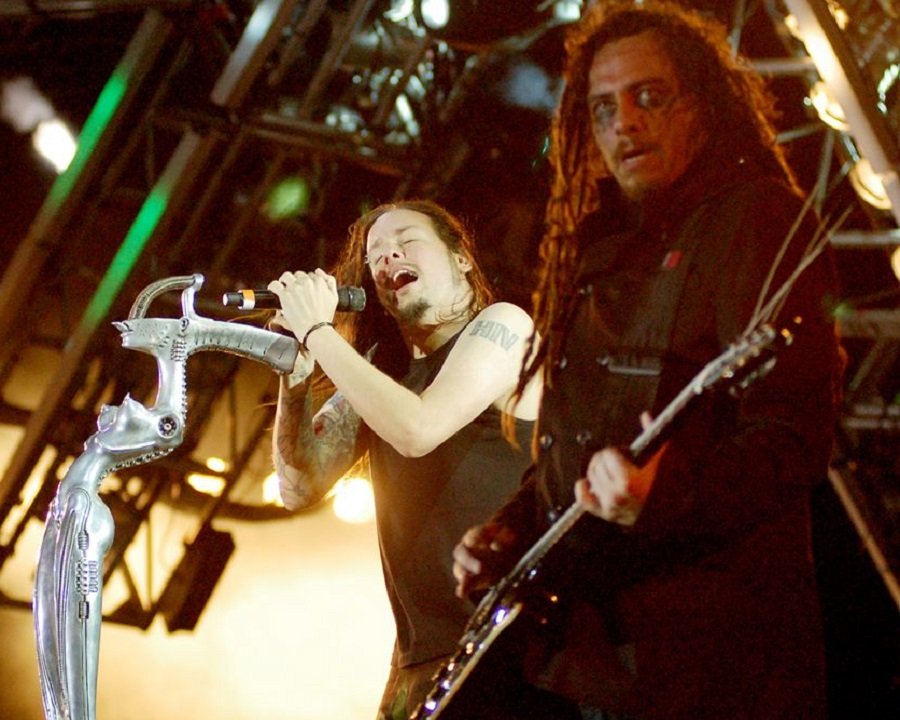
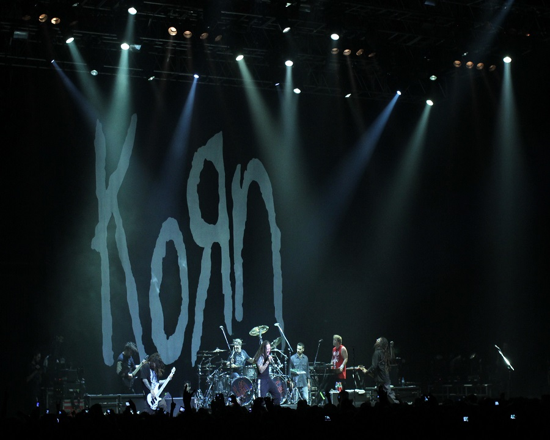
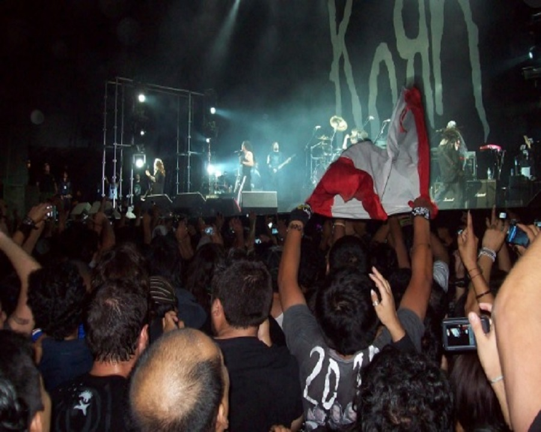
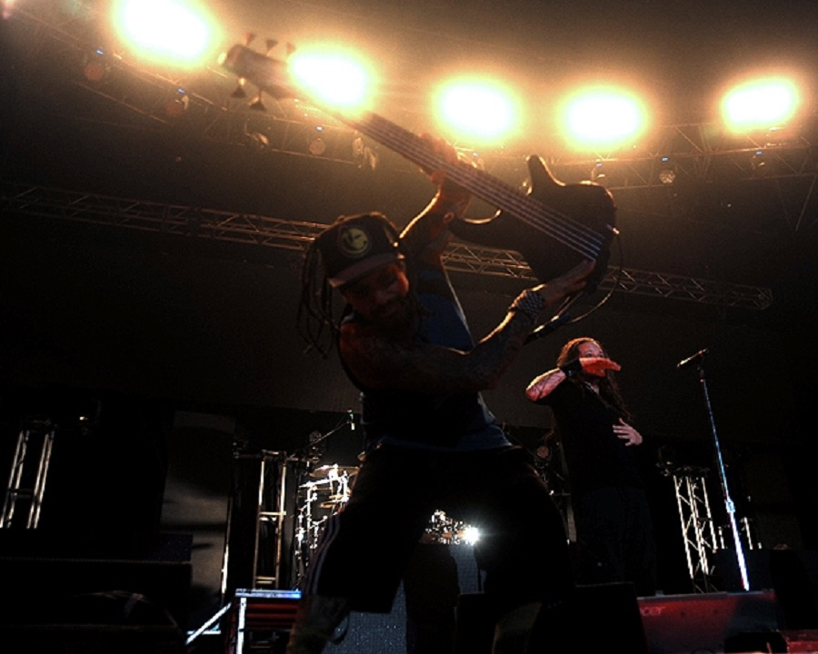
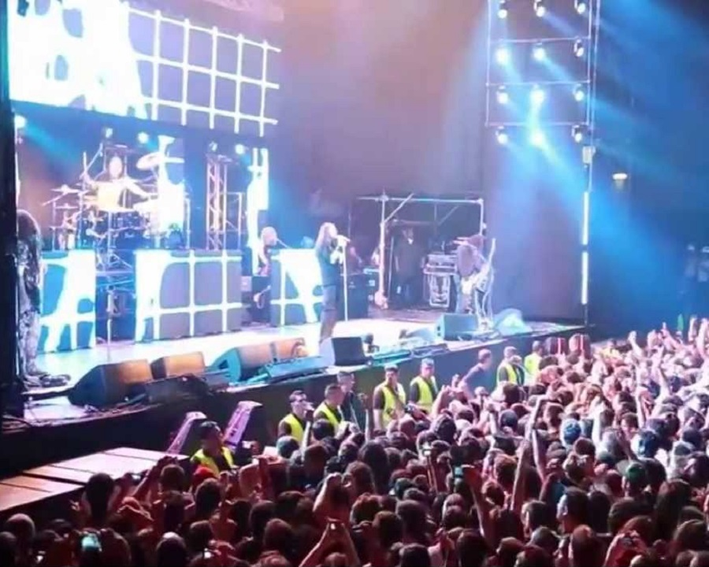
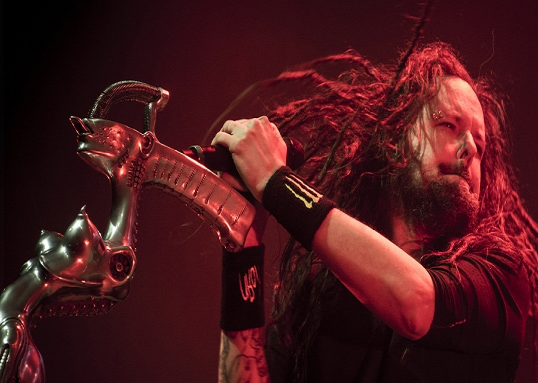
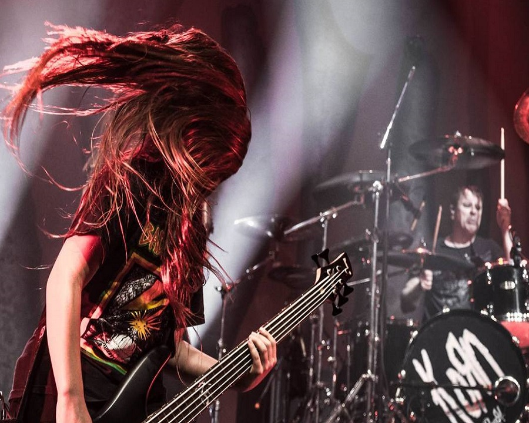

Quilmes Rock 2008
Korn tocó en Argentina por primera vez en el año 2008, en el Estadio Monumental Antonio Vespucio Liberti. Aquella noche del 30 de marzo abrieron su show con "Intro-Right Now" y cerraron con "Blind", sonando en total 16 de sus canciones, presentando así su último CD en aquel entonces "Untitled" y dejando también sus más clásicos para detonar el Estadio River Plate. Superando con esa potencia que el público otorgaba, a las demás bandas incluyendo el más esperado de esa noche, Ozzy Osbourne.


Korn Luna Park
Korn volvió un 18 de abril del 2010, y después de dos años confirmaron que el público realmente los quería ver a ellos, al darse cuenta que el Estadio Luna Park donde dieron el show, estaba totalmente lleno. Además de que el clima no ayudo esa noche, el recital fue único. Korn otorgo a sus fans su canción "Oildale", que sería el primer song que sonaría en el próximo cd que sacarían 4 meses después.


Korn en Malvinas Argentinas
Korn regresó un 22 de octubre del 2013, y ya nos podemos dar cuenta que volvieron otra vez para dar ellos mismos su show personal a sus fans argentinos más puros. Tocaron en el Estadio Cubierto Malvinas Argentinas y presentaron su CD "The Path Of The Totality". La joya de ese recital fue la vuelta de "Head", ex guitarrista de Korn que había renunciado a la banda por más de 8 años aproxidamente.


Korn en Malvinas Argentinas
Y por última vez hasta la actualidad, el último recital de Korn en Argentina fue el 25 de abril del 2017, otra vez, en el Estadio Cubierto Malvinas Argentinas. El show fue una bomba de emoción y adrenalina pura. Presentaron su último cd del momento que era "The Serenity Of Suffering" pero hubo un problema grave, Fieldy estuvo ausente durante la gira Sudamericana teniendo como reemplazo a Tye Trujillo. Y a pesar de lo contento que quedaron tanto la banda como los fans con el recital, fue el único día de aquella semana que llovió durante todo el día, dejando a los fans mojados con lágrimas, sudor y lluvia. Y como último detalle pero no menos importante, Jonathan volvió a traer a 'The Bitch', su destacable micrófono que solo había echo presencia en el 2008.

